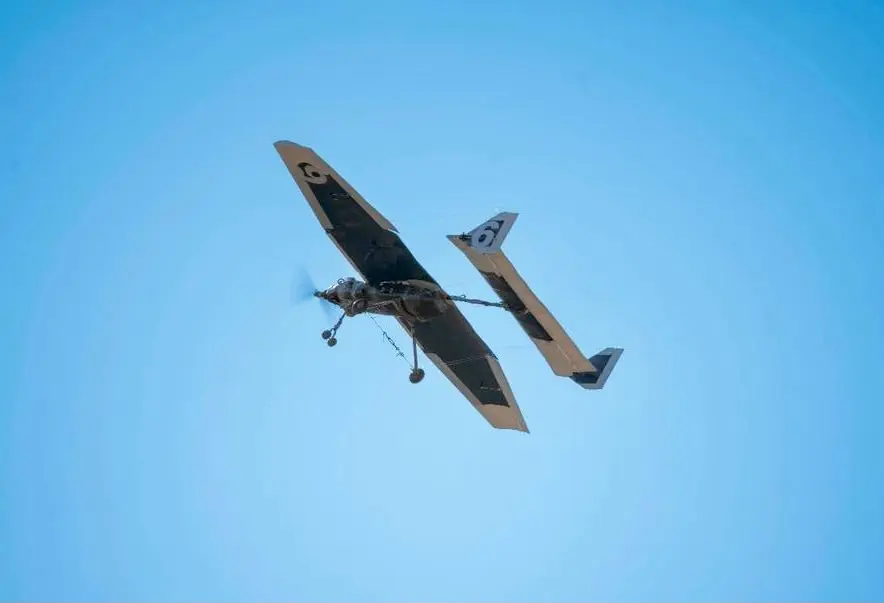
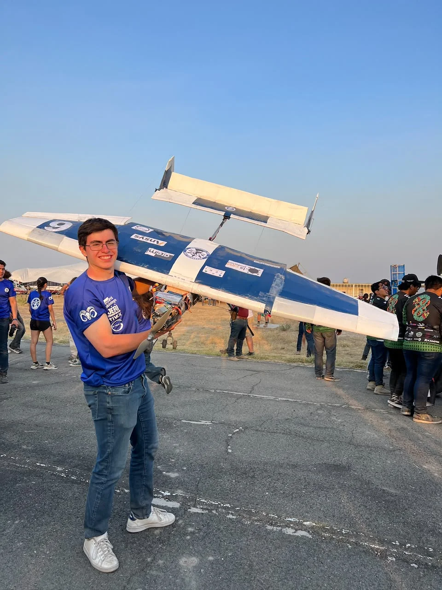
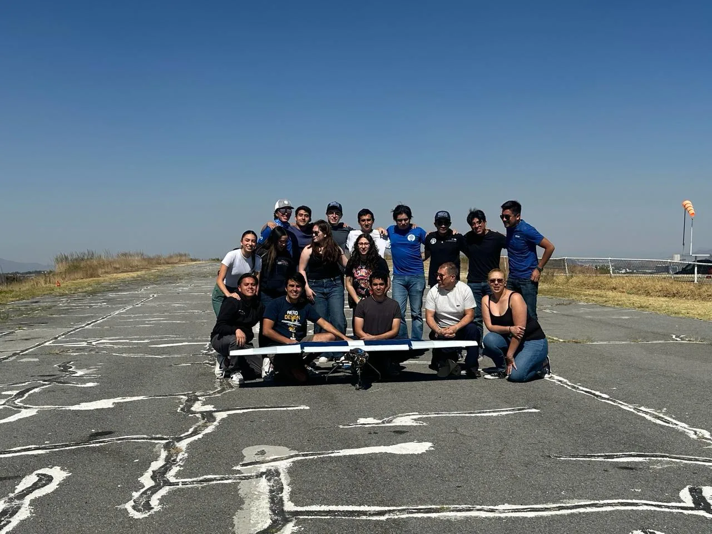
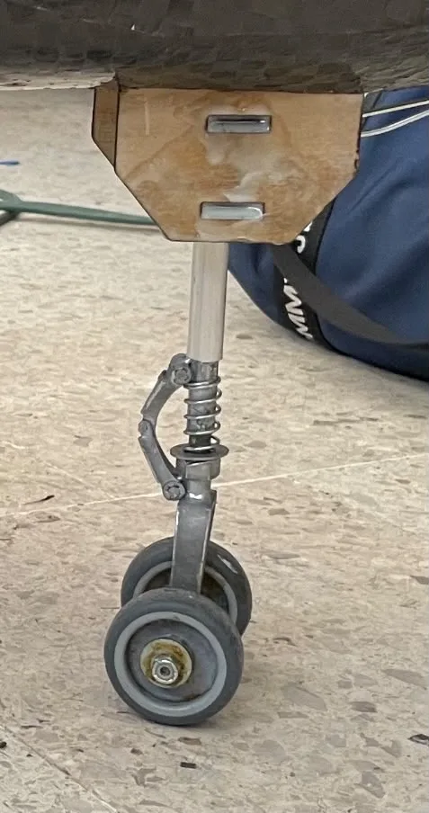
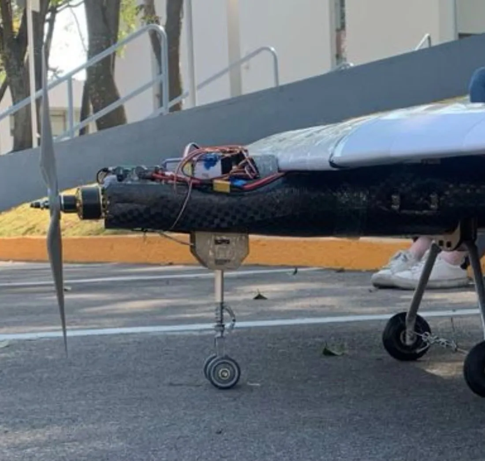
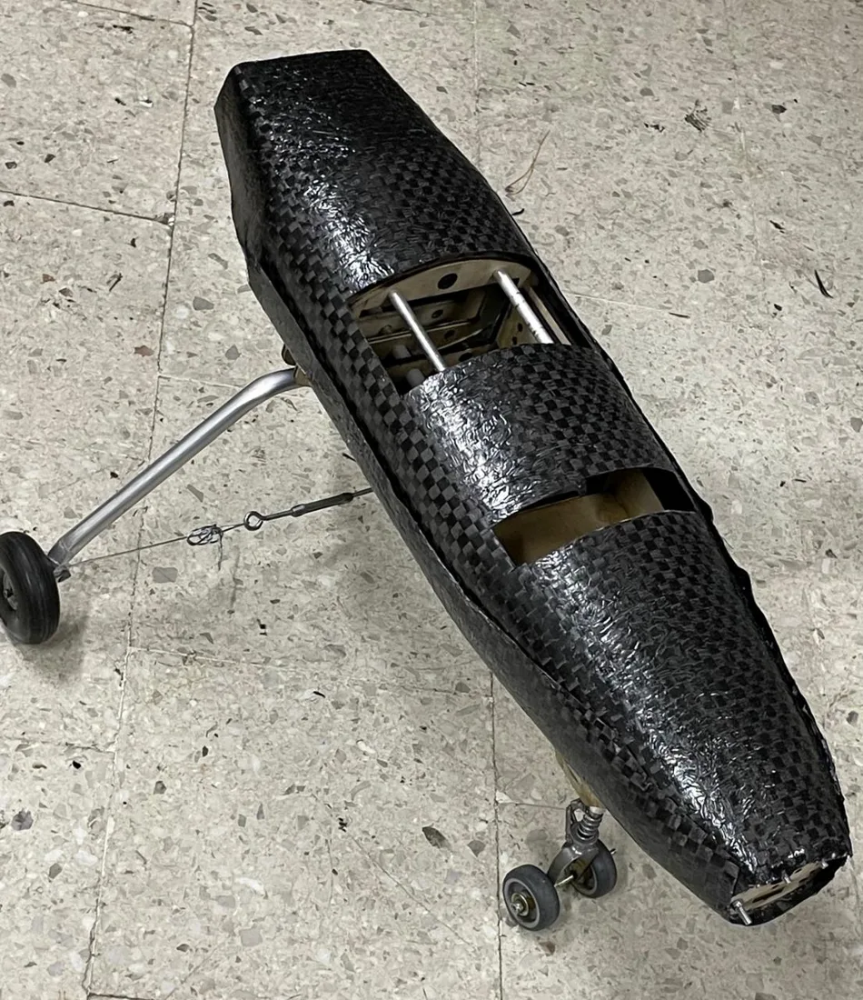
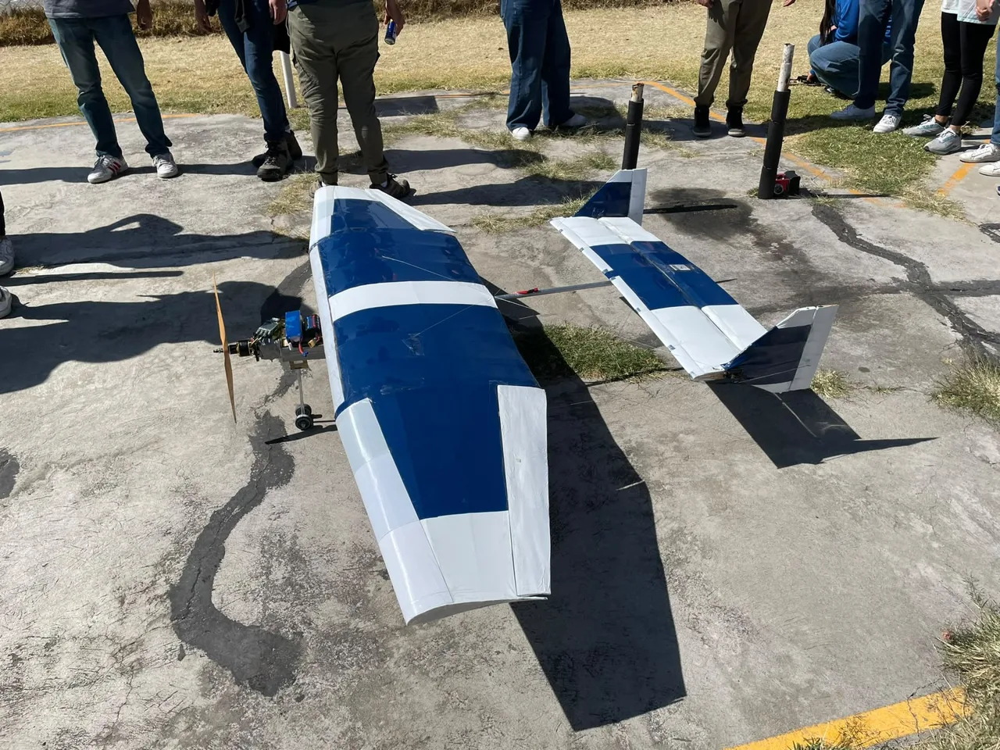

Size the usable stroke
I selected the spring to use the available travel under the analyzed impact case, with the stop limiting motion beyond that stroke.
SAE AERO DESIGN MÉXICO · 2024 · REGULAR CLASS
Coordinating an eight-person manufacturing team, fitting a carbon-fiber case and developing a spring-loaded nose landing gear.
Manufacturing Coordinator · Borregos CEM Aero Design


MY CONTRIBUTION
In my first year with Borregos CEM, I coordinated eight manufacturing members, organized tasks and checked build quality while constructing the aircraft to the design team's requirements.
My personal work included designing and manufacturing the nose landing gear, trimming and fitting the carbon-fiber fuselage skin, and developing an assembly spacer to correct rib alignment.

01 / MECHANICAL DESIGN
The front propeller left limited ground clearance. I designed a spring-loaded nose gear with a fixed compression stroke and a mechanical stop to limit further nose movement under a larger impact.


I selected the spring to use the available travel under the analyzed impact case, with the stop limiting motion beyond that stroke.
I added triangular gussets to the original welded tube-and-flat-bar concept to reinforce the connection.
I moved the rotational interface close to the mounting base, separating it from the spring location.
02 / MANUFACTURING & QUALITY
I received the molded fuselage skin and trimmed and sanded its edges to match the design geometry. This required careful handling and personal protective equipment during carbon-fiber finishing.
Small misalignments while bonding the rib tips produced an uneven trailing edge after sheeting and film covering. I designed an assembly spacer that held the parts in alignment and eliminated the observed issue during subsequent assembly.

Hands-on manufacturing included laser cutting, tube bending, sheet-metal work, 3D printing and aluminum welding, alongside team assembly and quality checks.
03 / GROUND TESTING
The team report specifies a 13.7 cm drop height, calculated using an 11.2 kg reference mass and 1.02 m² wing area. Workshop constraints meant the test was performed without the wing.
After the test, the team reported no fractures or permanent deformation in the fuselage or landing gear. This was a check of the tested configuration; spring force, suspension travel and steering response were not quantified in the supplied results.
04 / COMPETITION FLIGHT
Hyperion competed in Regular Class at SAE Aero Design México 2024, carrying solid and liquid payloads. The aircraft completed six competition flights and demonstrated 3 kg of payload at approximately 4 kg empty mass.
The design report contains earlier mass estimates and payload targets; the figures here describe the competition outcome reported by the team member.

RESULTS / TEAM ACHIEVEMENT
| Overall | 2nd |
|---|---|
| Flight rounds | 2nd |
| Design report | 3rd |